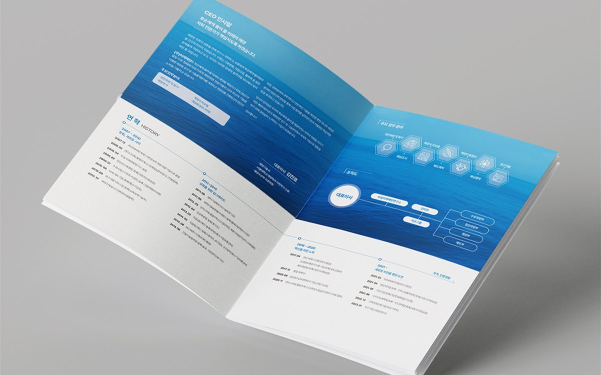

핵심 요약
① 영문 카탈로그는 번역 후 글자 길이가 20~30% 늘어나기 때문에 국문판을 그대로 옮기지 말고 레이아웃을 다시 잡아야 합니다.
② 제품명·성분명·규격 표기 같은 용어집을 번역 전에 확정하면 부서 간 표기 불일치가 사라집니다.
③ 번역과 조판을 같은 팀이 맡으면 국문판 확정 후 1~2주 안에 영문판을 납품할 수 있고, 수출바우처 정산 서류도 함께 정리됩니다.
안녕하세요, 퍼스트디자인 대전지사입니다. 대덕테크노밸리와 둔곡지구의 바이오·의료기기 기업은 해외 학회와 전시회 참가가 잦아 영문 카탈로그 수요가 꾸준합니다. 그런데 국문 카탈로그를 번역 업체에 맡기고 그 파일을 다시 디자인 업체에 넘기는 과정에서 일정이 늘어지고 지면이 깨지는 경우를 자주 봅니다. 오늘은 영문 카탈로그를 한 번에 끝내는 순서를 정리해 드리겠습니다.
영문 카탈로그는 왜 번역보다 레이아웃이 문제일까?
한국어 문장을 영어로 옮기면 글자 수가 평균 20~30% 늘어납니다. 국문판에서 딱 맞게 들어간 사양표와 설명 박스가 영문판에서는 넘치고, 넘친 글을 억지로 줄이면 글자 크기가 작아져 읽기 어려워집니다. 그래서 영문판은 국문판 파일에 글만 바꿔 넣는 작업이 아니라 판형 안에서 단 구성과 여백을 다시 잡는 작업입니다.
저희는 국문판을 만들 때부터 영문판을 염두에 두고 사양표의 열 너비와 설명 박스에 여유를 둡니다. 이렇게 하면 영문판 작업 시 페이지 수가 늘어나지 않고, 두 언어의 페이지 번호가 같아 해외 바이어와 통화하면서 "7페이지 표를 보세요"라고 말할 수 있습니다.

번역 전에 용어집을 먼저 만들어야 하는 이유는?
바이오 기업의 카탈로그에는 제품명, 성분명, 규격, 인증 명칭처럼 표기 규칙이 정해져야 하는 단어가 많습니다. 영업 부서와 연구 부서가 각각 다른 영문 표기를 쓰고 있으면 카탈로그 안에서도 표기가 섞입니다. 저희는 번역에 들어가기 전에 아래와 같은 용어집을 먼저 만들어 담당자 확인을 받습니다.
| 구분 | 확정할 것 | 확인 주체 |
| 제품명 · 브랜드명 | 대소문자, 상표 기호 위치 | 마케팅 · 영업 |
| 성분 · 기술 용어 | 학술 표기, 약어 첫 등장 시 풀이 | 연구 · 개발 |
| 규격 · 단위 | 단위 기호, 소수점 자릿수 | 품질 · 생산 |
| 인증 · 허가 | 공식 영문 명칭, 로고 사용 규정 | 품질 · 인허가 |
용어집이 확정되면 번역 부서가 그 기준으로 번역하고, 조판 후에도 같은 기준으로 교정합니다. 이후 홈페이지와 전시 패널을 만들 때도 같은 용어집을 쓰기 때문에 회사 전체의 영문 표기가 통일됩니다.
국문판과 영문판을 같은 일정으로 만드는 순서는?
가장 빠른 순서는 국문판 초안 확정 → 용어집 확정 → 국문판 전체 디자인과 번역 동시 진행 → 영문판 조판 → 두 언어 동시 교정입니다. 번역 업체와 디자인 업체가 다르면 이 순서를 지키기 어렵지만, 퍼스트디자인은 번역 부서를 직접 운영하기 때문에 국문판 확정 후 1~2주 안에 영문판까지 납품하는 일정이 가능합니다.
해외 전시회 일정이 정해져 있으면 그 날짜에서 역산해 인쇄와 배송 기간까지 포함한 일정표를 드립니다. 전시회 현지로 직접 발송해야 하는 경우 포장 규격과 통관 서류도 함께 챙깁니다.
수출바우처로 카탈로그 제작비를 쓸 수 있을까?
수출바우처 사업의 홍보 자료 제작 항목으로 영문 카탈로그·브로슈어 제작비를 집행하는 기업이 많습니다. 사업 안내에 따라 수행기관 등록 여부와 정산 서류 형식이 다르니 신청 전에 담당 기관에 확인하시고, 저희는 견적서·수행 결과 보고서·납품 확인 자료 등 정산에 필요한 서류를 제작 일정에 맞춰 준비해 드립니다. 국문판과 영문판을 함께 진행하면 정산 항목을 한 번에 정리할 수 있어 담당자 부담이 줄어듭니다.
자주 묻는 질문
Q. 둔곡지구 바이오 기업인데 영문 외에 중문판도 필요합니다. 가능한가요?
A. 네. 영문·중문·일문·베트남어까지 대응합니다. 언어별로 글자 길이가 달라 레이아웃을 각각 다시 잡지만, 같은 마스터에서 만들기 때문에 페이지 구성은 동일하게 유지됩니다.
Q. 이미 만들어 둔 국문 카탈로그가 있는데 영문판만 만들 수 있나요?
A. 가능합니다. 원본 디자인 파일이 있으면 그 파일 기준으로 영문판을 조판하고, 파일이 없으면 인쇄본을 기준으로 같은 구성을 다시 만듭니다.
Q. 전시회까지 3주 남았는데 영문 카탈로그를 새로 만들 수 있을까요?
A. 국문 원고가 준비되어 있다면 가능합니다. 초안 확정에 3일, 디자인·번역 병행 10일, 인쇄 5일로 잡고 전시회 전에 받아보실 수 있게 일정을 짭니다.
Q. 영문 카탈로그 인쇄는 국내에서 하나요?
A. 네. 자체 인쇄소에서 인쇄하고, 해외 전시장으로 직접 발송해야 하면 포장과 배송까지 처리해 드립니다.
퍼스트디자인 대전지사
대덕연구단지와 정부대전청사, 세종·청주·공주 충청권의 연구기관·바이오 기업·공공기관·제조기업 홍보물을 전담합니다. 기획·디자인·번역·촬영·인쇄를 한 팀에서 처리하고, 자체 인쇄소에서 소량 디지털 인쇄부터 대량 옵셋 인쇄까지 직접 진행합니다. 초안을 먼저 확인받고 진행하는 방식으로 12년간 3,200건 이상을 납품했습니다.
- 12년+편집 디자인 경력
- 3,200+납품 프로젝트
- 98%재의뢰 · 소개
- 400+정부지원사업 수행
대덕테크노밸리·둔곡·신동지구 바이오 기업의 영문 카탈로그·브로슈어 제작이 필요하시면 국문 원고와 전시 일정을 알려주세요. 용어집부터 인쇄·배송까지 한 팀이 진행합니다. 상담은 1600-9487(평일 09:00~18:00) 또는 work@firstmkt.co.kr로 문의해 주세요. 대전·세종·충청권은 직접 방문 미팅도 가능합니다.